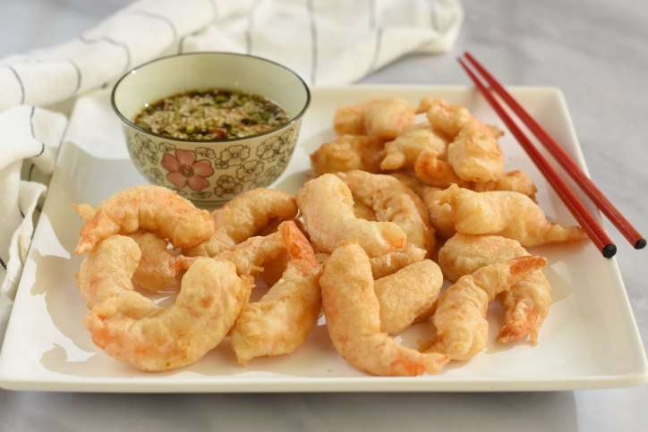

🍜 Ramen al estilo Sanji
por Usuario123
Un ramen con todo el sabor del East Blue. Fusión perfecta entre tradición y creatividad.

🍤 Tempura de camarón
por CocineroZeff
Crujientes por fuera, jugosos por dentro. Una receta ideal para sorprender.

🍛 Curry picante del East Blue
por NamiChef
Un curry intenso con especias marinas, ideal para navegantes valientes.
¿Quieres acceder a más recetas exclusivas de la tripulación? Inicia sesión y descubre más del arte culinario de Sanji.